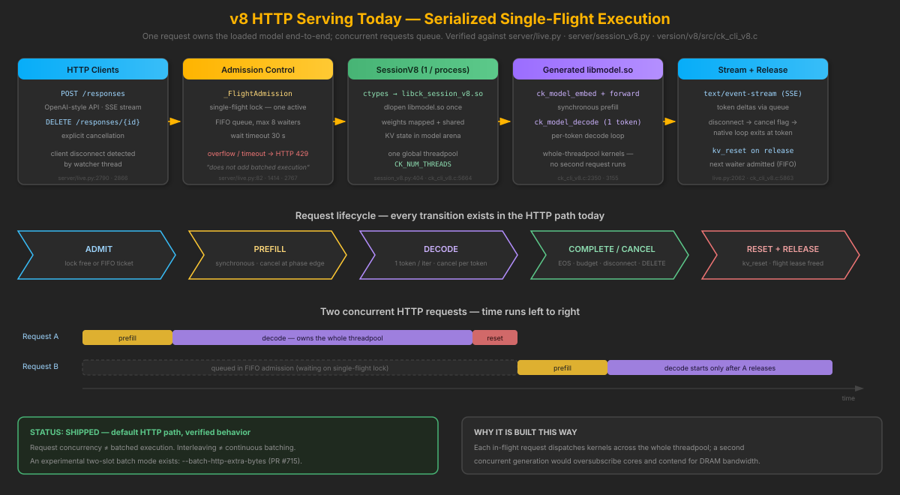
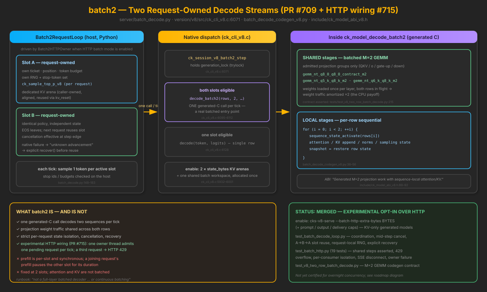
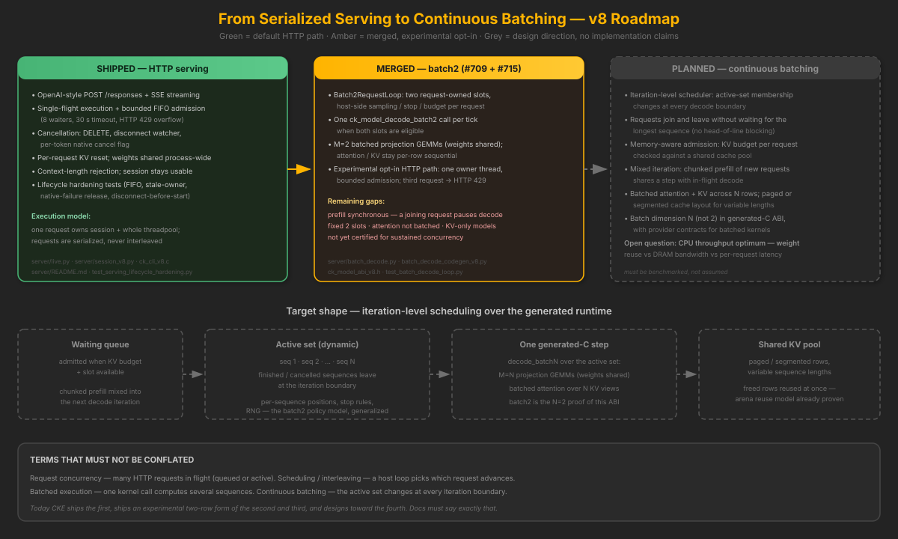

Serving & Batching
CKE is a C-first compiler, kernel library and runtime; serving is a layer on top of the generated model, not a redefinition of the project. This page documents how HTTP serving actually executes today, what the merged two-slot batch decode does and does not do, and what true continuous batching still requires.
Default path: verified batch2: experimental opt-in continuous batching: planned, not implemented
Terms that must not be conflated
Four related but distinct capabilities. Claims about CKE serving should name exactly which one is meant:
- Request concurrency — many HTTP requests in flight (queued or active).
- Scheduling / interleaving — a host loop picks which request advances at each step.
- Batched execution — one kernel call computes several sequences in the same pass.
- Continuous batching — the active set changes at every iteration boundary: requests join and leave without waiting for the longest sequence.
Today CKE ships the first, ships an experimental two-row form of the second and third, and designs toward the fourth. Concurrent HTTP requests, multi-threaded kernels, and serial request multiplexing are not, by themselves, batched decode.
Capability status
| Capability | Status | Source evidence | Test evidence |
|---|---|---|---|
HTTP serving (OpenAI-style /responses, SSE streaming) | Shipped | server/live.py, version/v8/scripts/ck_serve_v8.py | test_live_streaming.py, lifecycle hardening tests |
| Bounded admission (single-flight + FIFO queue, HTTP 429 overflow) | Shipped | server/live.py _FlightAdmission (8 waiters, 30 s) | test_serving_lifecycle_hardening.py |
| Cancellation & cleanup (DELETE, disconnect watcher, per-token cancel) | Shipped | server/live.py, ck_cli_v8.c cancel flag | lifecycle hardening + streaming socket tests |
| Per-request KV isolation in default mode (reset per request, shared weights) | Shipped | ck_session_v8_generate → kv_reset; one process-wide libmodel.so | serving lifecycle tests; A→B→A smoke runs |
Two-slot batched decode (ck_model_decode_batch2, M=2 projection GEMMs) | Experimental | server/batch_decode.py, batch_decode_codegen_v8.py, ck_model_abi_v8.h | test_batch_decode_loop.py, test_v8_two_row_batch_decode.py |
Two-slot HTTP decode (opt-in --batch-http-extra-bytes) | Experimental | server/batch_http.py, ck_serve_v8.py | test_batch_http.py (19 tests, incl. real-socket SSE) |
| Iteration-level continuous batching (dynamic join/leave, N>2) | Planned | — | — |
| Mixed / interruptible prefill inside a decode step | Planned | — | — |
| Batched attention / KV across rows | Planned | — | — |
| Continuous-batching performance benchmarks | Planned | — | — |
Passing scheduler unit tests are not proof of batched model execution or end-to-end serving throughput; those require separate evidence. This table is the claim boundary for the whole page.
Who owns what — where scheduling ends and generated C begins
| Component | Owns |
|---|---|
| Model compiler + code generation | Circuit lowering, provider resolution, memory plan, emitted C |
Generated model runtime (libmodel.so) | Actual model execution: prefill, decode steps, KV/state storage inside its arena |
| Kernel execution | Arithmetic over supplied pointers; one process-global threadpool |
Serving layer (server/live.py, batch_http.py) | HTTP, admission, request lifecycle, streaming, cancellation, slot policy |
Session bridge (session_v8.py / ck_cli_v8.c) | ctypes/native boundary, session state, batch2 slot ownership |
The serving layer never computes logits, and the generated runtime never sees HTTP. The boundary is the session ABI: the host passes token ids in and receives logits (or decode steps) out. One process loads the model once; every request shares the mapped weights, while per-request state lives in request-owned arenas.
Default: serialized single-flight serving
Without batch flags, one request owns the loaded model end to end. A bounded FIFO queue (8 waiters, 30 s timeout) absorbs bursts and returns HTTP 429 beyond that. This is deliberate: each in-flight request already dispatches kernels across the whole threadpool, so a second concurrent generation would oversubscribe cores and contend for DRAM bandwidth rather than speed anyone up.

Experimental: two-slot batched decode (batch2)
Merged in PR #709 (native/host loop) and PR #715 (HTTP wiring). When enabled, two requests can share one generated-C decode call per tick: projection GEMMs run batched at M=2 with weights loaded once, while attention, KV writes and positions stay sequence-local. A host-side loop keeps sampling, stop rules and budgets strictly per request.
# master switch plus required caps (see runbook for the exact, current invocation)
cks-v8-serve … --batch-http-extra-bytes BYTES \
--batch-http-prompt-cap TOKENS \
--request-output-cap TOKENS

What you get
- Two requests decoded per generated-C step when both slots are active — measured inside the owner as shared steps, asserted by tests.
- Projection weight traffic amortized across both rows — the real CPU payoff.
- Per-request isolation: separate KV arenas, RNG, stop rules, output caps, cancellation and failure recovery.
- Bounded admission: a third concurrent request receives HTTP 429; delivery queues are bounded so a slow consumer cannot stall the owner.
What you do not get
- Not a full-layer batched decoder: attention and KV are per-row sequential inside the call.
- Prefill stays synchronous and per-slot — a joining request's prefill pauses the other slot for its duration; the prompt cap bounds tokens, not time.
- Fixed at two slots, KV-cache-only generated models (recurrent-state models are outside this capability).
- Not yet certified for sustained/overnight concurrency — treat as experimental.
Planned: continuous batching
The design direction is iteration-level scheduling over the generated runtime: an active set whose membership changes at every decode boundary, memory-aware admission against a shared KV pool, mixed/chunked prefill, and batched attention across N rows. batch2 is the N=2 proof of the ABI shape — the per-request policy model, arena reuse and recovery discipline generalize; the scheduler, batch-N codegen and paged KV do not exist yet.

Memory behavior under concurrency
Weights are mapped once per server process and shared by every request. Per-request cost is KV cache (and, for hybrid models, recurrent state) plus delivery buffers:
KV bytes ≈ 2 × KV-owning layers × KV heads × head dim × tokens × bytes/element
That approximation hides important detail: distinct KV storage owners (not layer count), grouped-query geometry, sliding-window layers, hybrid/recurrent state, alignment and cache layout. Use the Model Sizing Lab for an architecture-aware estimate. Also distinguish four different limits: maximum resident requests by memory, maximum active decode slots (2 in batch mode), queue capacity, and the sustainable concurrent workload — they are not interchangeable.
Performance: what to expect, and what not to claim
On CPUs, decode is usually memory-bandwidth-bound. Batching two rows shares each weight read across both sequences, so aggregate tokens/s can rise — while per-request rate can fall, and prefill interference adds latency for a joining request. Whether batch2 helps a given deployment depends on model size, quantization, context distribution and thread count. There are no published continuous-batching benchmarks for CKE yet; do not cite throughput claims without them. Measure prefill and decode separately, at fixed threads, with warm-up, and report aggregate throughput and per-request latency as distinct numbers.
Model-specific boundaries
Serving behavior is per generated artifact, not per server. The batch2 path currently requires a generated KV-only batch-capable model layout, and enable_batch2 fails at startup otherwise — the server refuses to boot in batch mode rather than silently degrading. Recurrent-state models (e.g. DeltaNet-style layers), vision-language bridges and audio pipelines have different state ownership and are outside the batch2 capability today; their single-flight serving follows the default path. For the per-circuit record of which models carry serving declarations and certification evidence, see the v8 Serving Coverage Inventory.
Evidence and sources
- Serving layer:
server/live.py·server/batch_http.py·server/batch_decode.py·server/session_v8.py·server/README.md - Native bridge:
version/v8/src/ck_cli_v8.c(session, batch2 step, KV arenas, cancel) ·include/ck_model_abi_v8.h·include/ck_session_v8.h - Codegen:
version/v8/scripts/batch_decode_codegen_v8.py(shared M=2 GEMM stages vs per-row local stages) - Tests:
server/tests/test_batch_http.py·server/tests/test_batch_decode_loop.py·server/tests/test_serving_lifecycle_hardening.py·tests/test_v8_two_row_batch_decode.py - Operator docs: v8 runbook (incl. Experimental batch HTTP) · Model Sizing Lab · v8 Serving Coverage Inventory (per-circuit certification evidence)
Page authored against origin/main ce70528cd (post PR #709/#715) by source inspection; runtime claims rest on the cited tests, not on new benchmarks run for this page.